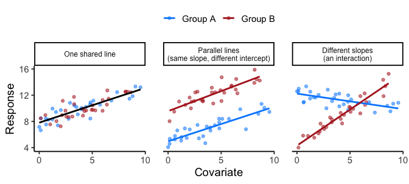
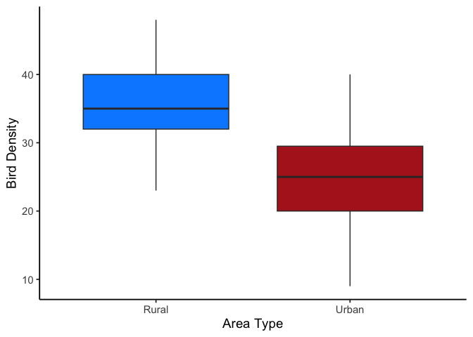
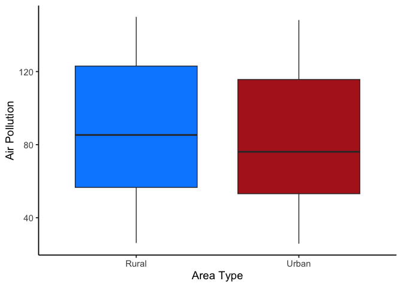
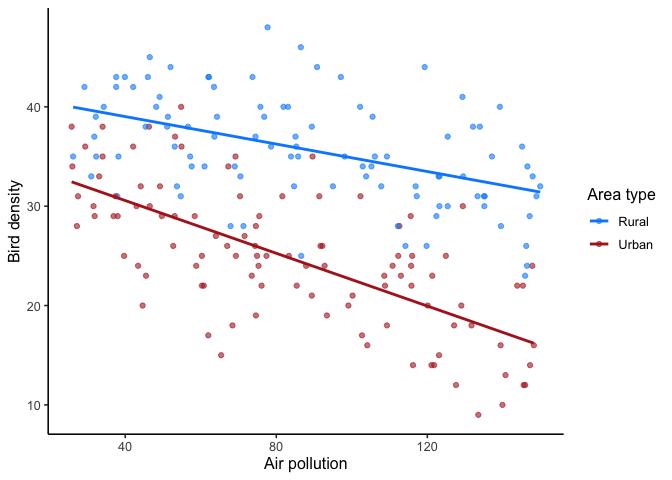

11 Analysis of Covariance (ANCOVA)
We’ve now covered both regression and ANOVA. This chapter merges them:
\[\text{Regression} + \text{ANOVA} = \text{ANCOVA}\]
The last chapter compared macroinvertebrate species count across two discrete Pollution categories, present or absent, and two Flow categories, low or high. But suppose you actually measured each channel’s pollution concentration instead of just labeling it present or absent.
Does Flow’s effect on species count still depend on pollution once pollution is treated as the continuous measurement it really is, rather than binned into two groups? (covariate: pollution concentration; factor: flow rate)
Does exposure to PFAS correlate with lifetime cancer incidence uniformly across low- and high-income American populations? (covariate: PFAS exposure; factor: income level)
Each question pairs a continuous relationship, a continuous variable’s effect on the outcome, with a categorical grouping. That pairing, one continuous variable and one categorical factor, is what makes a design an ANCOVA rather than a plain regression or a plain ANOVA.
The first question is really a complaint about the last chapter. “Pollution: present or absent” is a real simplification of something that’s actually continuous, a concentration in parts per billion, measured on a gradient, not a light switch. Sorting continuous measurements into “high” and “low” buckets throws away exactly the information a covariate needs: how much more polluted, not just whether. Whenever you have the real numbers, ANCOVA (or, if there’s no categorical factor left at all, plain regression) is almost always the better tool than forcing them into groups first.
ANCOVA is a linear model built directly on regression’s own equation. A simple linear model is
\[y = \beta_0 + \beta_1 x + \varepsilon\]
Here \(\beta_0\) is the intercept, \(\beta_1\) is the slope, and \(\varepsilon\) is the error: one intercept, one slope, one line.
ANCOVA adds a categorical factor to that equation, and the whole chapter comes down to one question: does every group follow that same line, or does each group need its own slope and intercept?
We answer it in two steps: first test whether groups have different slopes, then, only if slopes are parallel, test whether groups differ in adjusted means.
11.1 Terminology
Covariate: a continuous variable that changes alongside the response and helps explain part of its variation. In environmental studies, common covariates include temperature, rainfall, soil moisture, or pollution concentration: factors that may influence the outcome but aren’t the main treatment of interest. Including one lets us adjust for its influence, giving a clearer test of the categorical effect once that continuous background variation is accounted for.
The categorical predictor itself, in every example this chapter uses, is what’s called a fixed factor: specific, intentional levels chosen by the researcher (urban vs. rural, shaded vs. open canopy), not a random sample of possible groups. That distinction matters more once you’re building mixed-effects models, which is beyond where this course goes. A random factor, by contrast, would be something like the specific counties your streams happen to sit in: you aren’t interested in those ten counties for their own sake, they stand in for a larger population of possible counties, and you’d want your conclusions to generalize beyond just the ones you sampled.
11.2 What ANCOVA Is
ANCOVA helps us answer: does a relationship hold up across groups? That framing fits environmental work particularly well, because you usually can’t experimentally strip out a covariate like temperature, rainfall, or season anyway. Often you wouldn’t want to. It may be the reason you designed the study in the first place. In the examples in this chapter, the covariate is what we care about and the interaction is the result we’re testing for.
Warning: The other way you’ll see ANCOVA
Elsewhere the covariate is a nuisance instead: something you control for so a group comparison comes out fairer, with an interaction being a box you check and hope stays empty.
A classic version from psychology compares anxiety scores across two therapy groups after treatment, controlling for pre-treatment scores.
Same test, same math. The only difference is which term you came to interpret, so decide that before you fit anything.
For ANCOVA, you need:
- A continuous dependent variable (the main effect you’re studying)
- At least one continuous independent variable (covariate)
- At least one categorical independent variable (which can be either a fixed or random factor)
11.2.1 Indicator (dummy) variables and how they work
Before we can read real coefficients off an ANCOVA table, it helps to see exactly how one equation can represent two different groups at once.
Categorical predictors get into a linear model by being coded as indicator variables. For a factor with \(k\) groups you include \(k-1\) indicators; the omitted group becomes the reference, and every coefficient is interpreted relative to it. With two groups, one indicator does the whole job:
\[x_c = \begin{cases} 0 & \text{group 1 (the reference group)} \\ 1 & \text{group 2} \end{cases}\]
In R, lm(y ~ x + Group) creates these indicators for you automatically.
Indicator variables in action. When an indicator variable is turned on (set to 1), it activates the terms multiplied by that variable. Depending on where the indicator appears in the model, that can change the intercept, the slope, or both.
Consider two predictors: a continuous variable \(x_l\) and an indicator \(x_c\) (0 or 1). The numbers below are arbitrary, chosen to make the arithmetic clean; the worked example later in this chapter plugs in real coefficients for air pollution and area type. Use this model:
\[y = 2x_l + 1(x_l x_c) - 7x_c + 3\]
When \(x_c = 0\) (indicator off), only the baseline terms are active:
\[y = 2x_l + 3 \qquad \text{slope} = 2, \ \text{intercept} = 3\]
When \(x_c = 1\) (indicator on), the new terms activate:
\[y = (2x_l + 3) + (1x_l - 7) = 3x_l - 4 \qquad \text{slope} = 3, \ \text{intercept} = -4\]
Turning on the indicator adds +1 to the slope and −7 to the intercept. One equation, two different lines, with the indicator deciding which one applies.
This is how linear models represent different groups: the indicator (\(x_c\)) and its interaction with \(x_l\) let a single equation shift the intercept and the slope for each group. ANCOVA uses exactly this logic to test, in order, whether the slopes differ between groups (the \(x_l x_c\) term) and, if they don’t, whether the adjusted means differ (the \(x_c\) term).
Naming the pieces. Write that same equation in the general form and each coefficient now has a job:
\[y = \underbrace{\beta_0}_{\text{reference intercept}} + \underbrace{\beta_1 x_l}_{\text{reference slope}} + \underbrace{\beta_2 x_c}_{\text{intercept shift}} + \underbrace{\beta_3 x_l x_c}_{\text{slope shift}} + \varepsilon\]
- \(\beta_0\) and \(\beta_1\) describe the line for the reference group (\(x_c=0\)).
- \(\beta_2\) is how much the intercept moves for the other group.
- \(\beta_3\) is how much the slope changes for the other group. This is the interaction term.
If we only include \(\beta_2\) and leave out \(\beta_3\), we get a restricted version: the intercept can shift but the slope cannot, so the two lines are forced to be parallel. That is the parallel-lines model, and it is the one we fall back to when the slope difference turns out not to be significant.
Note: Why this matters
Every coefficient you will read out of an ANCOVA table is one of these four. Without the indicator, \(\beta_2\) and \(\beta_3\) are just numbers R hands you. With it, \(\beta_3\) has a plain-language meaning you can check against a graph: it is the amount by which one group’s line tilts away from the other’s.
11.2.2 The Null Hypothesis in ANCOVA
Model. For one covariate (\(x\)) and a two-level group indicator \(x_c\in\{0,1\}\),
\(y=\beta_0+\beta_1 x+\beta_2 x_c+\beta_3(x\times x_c)+\varepsilon .\)
Figure 11.1 shows the three possibilities this model can produce, and it’s worth keeping this picture in mind for the two steps below.
ANCOVA works right to left across that figure: first it asks whether the rightmost panel is what we have (do the slopes differ?), and only if the answer is no does it ask whether we have the middle panel or the leftmost (do the intercepts differ?).
Step 1: Are slopes equal across groups? This tests whether the covariate effect is the same in each group.
- Null: \(H_{0,\text{int}}:\beta_3=0\) (parallel lines, same slope)
- Alternative: \(H_{A,\text{int}}:\beta_3\neq 0\) (non-parallel lines, different slopes)
Interpretation if rejected. Report the two fitted lines and describe how the slope differs by group. Do not test adjusted means, because the idea of a single adjusted mean per group assumes parallel slopes.
Step 2: Are adjusted means equal? (only if Step 1 retained parallel slopes) Fit the model without the interaction,
\(y=\beta_0+\beta_1 x+\beta_2 x_c+\varepsilon .\)
- Null: \(H_{0,\text{group}}:\beta_2=0\) (no difference in adjusted means)
- Alternative: \(H_{A,\text{group}}:\beta_2\neq 0\)
What the parameters mean.
- \(\beta_1\): common slope of \(y\) on \(x\) when slopes are parallel.
- \(\beta_2\): difference in group means after adjusting for \(x\) (tested only when \(\beta_3=0\)).
- \(\beta_3\): difference in slopes between groups.
Intercepts and centering. Intercepts are evaluated at \(x=0\). Compare intercepts only if you center the covariate, for example \(\tilde x=x-\bar x\), so that the intercepts represent group means at the average covariate value.
What to report.
- If \(x\times x_c\) is significant: “The effect of \(x\) differs by group,” then provide the two line equations and a figure with separate fitted lines.
- If \(x\times x_c\) is not significant: report the common slope \(\beta_1\) and the adjusted group difference \(\beta_2\), with a figure showing parallel lines.
Common pitfalls.
- Interpreting main effects when the interaction is significant.
- Comparing raw intercepts when \(x\) is not centered.
- Treating adjusted means as meaningful when slopes are not parallel.
11.2.3 One More Piece of Vocabulary: the Omnibus Test
R’s ANCOVA output is built around an omnibus F-test: a single test of whether there’s any difference in adjusted group means once the covariate is accounted for. It’s the same idea as a significant one-way ANOVA telling you some group differs without saying which, and it’s exactly why we still decompose it into the interaction-then-adjusted-means steps above rather than stopping at one \(p\)-value.
As always, statistical significance doesn’t guarantee ecological or practical importance. Interpret a rejected null in light of the study’s design, measurement precision, and the actual size of the effect, not just its \(p\)-value.
11.2.4 Checking ANCOVA’s assumptions
Most of these are ones ANOVA already needed; two are new because a covariate has entered the model.
Independent observations (same as ANOVA)
Approximately normal residuals and similar variances across groups (same as ANOVA)
Linearity within each group: the covariate-response relationship is a straight line (new, about the covariate)
Homogeneity of slopes: the groups share that same line, unless the interaction test says otherwise (new, and this is the one the interaction test above directly checks, rather than a condition you verify beforehand)
The covariate is measured with minimal error and isn’t itself affected by the treatment (new, and more consequential here than in an ordinary regression: measurement error in the covariate leaves genuine covariate-driven differences between groups only partially adjusted for, which can look like a treatment effect that isn’t really there)
11.3 Full ANCOVA Example
11.3.1 Question
Imagine we’re environmental scientists studying the impact of air pollution (a continuous variable) on bird species density (our dependent variable).
We want to know whether this relationship differs between urban and rural areas (our categorical variable).
Specifically, we want to know: Does the effect of air pollution on bird density differ between urban and rural areas?
We might expect that air pollution will have a stronger negative effect in urban areas than in rural areas: urban habitat is already fragmented and offers birds fewer clean patches to retreat to, so added pollution has less of a buffer to work against than it would in a rural area with more intact habitat nearby.
11.3.2 Model
We’ll fit an ANCOVA model to test whether location type influences bird density after accounting for air pollution.
The categorical variable (urban vs. rural) is represented as a dummy variable, and air pollution enters as a covariate.
- Dataset Overview: 200 observations of bird density across urban and rural sites, each with a measured level of air pollution.
11.3.3 Null and Alternative Hypotheses in our example ANCOVA
First, we state our hypotheses:
Omnibus (adjusted means) hypothesis After adjusting for air pollution, do urban and rural sites differ in mean bird density?
\(H_{0}: \mu_{\text{Urban, adj}} = \mu_{\text{Rural, adj}}\)
\(H_{A}: \mu_{\text{Urban, adj}} \neq \mu_{\text{Rural, adj}}\)
Here, \(\mu_{\text{Urban, adj}}\) and \(\mu_{\text{Rural, adj}}\) are the adjusted group means once the covariate (air pollution) is accounted for.
Slope (interaction) hypothesis
Does air pollution affect bird density in the same way across urban and rural sites?
\(H_{0,1}: \beta_{\text{interaction}} = 0\)
\(H_{A,1}: \beta_{\text{interaction}} \neq 0\)
A significant interaction means the slopes differ, and air pollution’s relationship with bird density depends on area type.
Intercept (baseline difference) hypothesis
If slopes are parallel (interaction not significant), do the adjusted means differ?
\(H_{0,2}: \beta_{0,\text{Urban}} = \beta_{0,\text{Rural}}\)
\(H_{A,2}: \beta_{0,\text{Urban}} \neq \beta_{0,\text{Rural}}\)
Rejecting \(H_{0,2}\) indicates an inherent group difference in bird density that is independent of pollution.
11.3.4 Analysis
Before we look at the model results, it’s always good practice to look at the data first.
Let’s start with the response variable, bird density, in Figure 11.2. This gives us a quick visual sense of whether urban and rural areas differ in their average values.
ggplot(data, aes(AreaType, BirdDensity)) +
geom_boxplot() + theme_classic(base_size = 12) +
labs(x = "Area Type", y = "Bird Density")
At first glance, bird density appears higher in rural areas than in urban ones, consistent with what we might expect ecologically.
Next, check the covariate, air pollution. If the covariate differs sharply between groups, ANCOVA will “adjust” for that difference. If it doesn’t, group comparisons will look more like a simple ANOVA.
ggplot(data, aes(AreaType, AirPollution)) +
geom_boxplot() + theme_classic(base_size = 12) +
labs(x = "Area Type", y = "Air Pollution")
Air pollution looks fairly similar between urban and rural sites, with no obvious systematic difference. This isn’t diagnostic, but it helps us anticipate what the model might show: we may find that group differences in bird density aren’t explained by air pollution alone.
11.3.5 Results of the ANCOVA Model
Now that we’ve explored the data visually, we can test our hypotheses formally using ANCOVA.
Step 1: Fit the ANCOVA model.
Notice this is the same aov() call we’ve been using for one-way and factorial ANOVA all along. R doesn’t need a special “ANCOVA function”: once AirPollution is numeric instead of a factor, aov() handles the continuous covariate automatically.
ancova <- aov(BirdDensity ~ AirPollution * AreaType, data = data)
| term | df | sumsq | meansq | statistic | p.value |
|---|---|---|---|---|---|
| AirPollution | 1 | 2183.89 | 2183.89 | 88.57 | 0.0000 |
| AreaType | 1 | 6450.54 | 6450.54 | 261.60 | 0.0000 |
| AirPollution:AreaType | 1 | 269.14 | 269.14 | 10.91 | 0.0011 |
| Residuals | 196 | 4833.03 | 24.66 | NA | NA |
Step 2: Interpret each term in light of the hypotheses
0. Omnibus (adjusted means) :
\(H_{0}: \mu_{\text{Urban, adj}} = \mu_{\text{Rural, adj}}\)
The overall ANCOVA test examines whether adjusted means differ between groups after accounting for the covariate.
Because we included an interaction term, this omnibus test is decomposed into two parts:
the interaction (slope difference), and
the main effects (covariate and group).
The ANCOVA table above has no row labeled “omnibus,” and no single \(p\)-value that answers this test on its own. So we interpret the omnibus test through the interaction and main-effect rows that are actually in the table, not as a separate line item.
1. Interaction (slope difference):
\(H_{0,1}: \beta_{\text{interaction}} = 0\)
The interaction between air pollution and area type is significant (\(p = .001\)).
Reject \(H_{0,1}\) → our slopes are not parallel. Air pollution’s relationship with bird density depends on area type.
2. Covariate (main effect of Air Pollution)
Although not a formal ANCOVA hypothesis, this term tests whether air pollution predicts bird density on average, across both groups.
It is significant (\(p < .001\)): bird density falls as pollution rises.
3. Group (main effect of Area Type): \(H_{0,2}: \mu_{\text{Urban, adj}} = \mu_{\text{Rural, adj}}\)
Area type is significant (\(p < .001\)), suggesting lower average bird density in urban areas.
However, because the interaction is significant, this group difference changes with air pollution level, so it should be interpreted conditionally, not as a single overall difference.
Reject \(H_{0,2}\) with caution.
Step 3: Examine regression coefficients
We can also fit the same model using lm() to view the regression coefficients directly.
This shows how each term contributes to predicting bird density and corresponds to the hypothesis tests we just discussed.
ancova_lm <- lm(BirdDensity ~ AirPollution * AreaType, data = data)
| term | estimate | std.error | statistic | p.value |
|---|---|---|---|---|
| (Intercept) | 41.784 | 1.310 | 31.90 | 0.0000 |
| AirPollution | -0.069 | 0.014 | -5.07 | 0.0000 |
| AreaTypeUrban | -5.909 | 1.802 | -3.28 | 0.0012 |
| AirPollution:AreaTypeUrban | -0.064 | 0.019 | -3.30 | 0.0011 |
R automatically converts the categorical AreaType variable into a 0/1 indicator behind the scenes, exactly the \(x_c\) switch from the detour earlier in this chapter. It picks one level (here, “Rural,” alphabetically first) as the reference, and every coefficient involving AreaType is interpreted relative to that reference. That’s why you see a coefficient called AreaTypeUrban but no separate AreaTypeRural term.
These coefficients give the direction and magnitude of each effect:
- (Intercept): estimated mean bird density for rural sites (the reference group) when air pollution is zero.
- AirPollution: slope of the relationship between pollution and bird density in rural sites.
- AreaTypeUrban: difference in intercept between urban and rural areas.
- AirPollution:AreaTypeUrban: difference in slope between urban and rural areas (the interaction).
Step 4: Visualize the interaction
As always, plotting helps confirm what the model tells us.
A scatter plot with fitted regression lines (Figure 11.4) lets us see how air pollution relates to bird density for each area type.

Here, the slopes differ by area type, illustrating the significant interaction we detected statistically. Both lines slope downward, so pollution is associated with fewer birds in both settings, but the urban line drops roughly twice as fast. The two lines start close together at low pollution and pull apart as pollution rises, which is exactly what a slope difference looks like.
You’ll also notice real scatter around each line, which makes sense: our overall \(R^2\) is 0.65.
Remember, \(R^2\) represents the proportion of variance in bird density explained by the model.
So about 65% of the variation in bird density is explained by air pollution, area type, and their interaction.
The remaining 35% reflects other factors, measurement noise, or natural ecological variability not captured by this simple model. That is a strong fit by the standards of field data, and it is strong here partly because this is a synthetic dataset built to illustrate the method. Real environmental data are usually messier.
Step 5: Centering the covariate
Interpreting intercepts at \(x = 0\) can be misleading when “zero pollution” isn’t meaningful.
By centering the covariate (subtracting its mean), we make the intercept represent average bird density at mean air pollution instead.
| term | estimate | p.value |
|---|---|---|
| (Intercept) | 35.828 | 0.0000 |
| AirPollution_c | -0.069 | 0.0000 |
| AreaTypeUrban | -11.385 | 0.0000 |
| AirPollution_c:AreaTypeUrban | -0.064 | 0.0011 |
This re-centering doesn’t change the slopes or \(p\)-values. It just shifts the intercepts, making them easier to interpret.
Interpreting the Centered Model
Notice that the coefficients for AirPollution_c (–0.069) and AirPollution_c:AreaTypeUrban (–0.064) are identical to the slopes we estimated before centering.
Only the intercept and the AreaTypeUrban (group difference) term have changed. They are now interpreted at the mean pollution level (about 86 units) instead of pollution = 0.
Intercept (35.8): Predicted bird density for rural sites at average air pollution.
AreaTypeUrban (–11.4): Urban sites have, on average, about 11 fewer birds than rural sites at the same mean pollution level.
AirPollution_c (–0.069): Slope for rural sites: bird density falls by about 0.07 birds for each additional unit of pollution.
Interaction (–0.064): Difference in slopes between groups. The urban slope = \(-0.069 + (-0.064) \approx\) –0.13, roughly twice as steep a decline as in rural sites.
Note how much the group difference changed when we centered: –5.9 before, –11.4 after. That is not a contradiction. Uncentered, the term compares groups at pollution = 0, a value we never actually observed. Centered, it compares them at average pollution, which is a real place in the data. When slopes differ, “the group difference” is not one number; it depends on where along the covariate you look.
Step 6: Summarize and Interpret
The significant interaction shows that air pollution’s effect on bird density depends on area type: bird density declines with pollution in both settings, but the decline is about twice as steep in urban sites.
Because the interaction is significant, we focus on these different slopes, not on adjusted mean differences.
If the interaction had not been significant, we would instead drop the interaction term and interpret the parallel slopes model, comparing adjusted means between groups.
Important: Results reporting
Results from the ANCOVA indicated that air pollution’s effect on bird density depended on area type, F(1, 196) = 10.91, p = .001. Bird density declined with increasing pollution in both settings, but the decline was roughly twice as steep at urban sites (slope -0.13) as at rural ones (slope -0.07). These findings suggest that urbanization intensifies the pollution-bird density relationship and may point toward the need for area-specific conservation strategies.
11.4 Chapter Summary
Why it matters. Environmental relationships rarely play out identically everywhere. ANCOVA is the tool for a specific, recurring question: does a continuous relationship, like pollution’s effect on some outcome, hold the same way across different groups, or change from one group to the next?
Core ideas
- ANCOVA is regression plus a categorical factor. It takes the familiar \(y=\beta_0+\beta_1 x+\varepsilon\) line and lets a categorical grouping shift the intercept, the slope, or both, using the same indicator-variable machinery that underlies every linear model in this book.
- Check the interaction first. Before anything else, test whether the groups’ slopes differ (\(H_0:\beta_3=0\)). That answer decides how everything else gets interpreted.
- A significant interaction means report the two lines, not one number. If slopes differ, describe how the relationship changes by group instead of collapsing to a single adjusted-mean comparison, which assumes parallel lines that don’t actually hold here.
- If slopes are parallel, compare adjusted means. Drop the interaction term and test whether the groups’ intercepts differ once the covariate is accounted for.
- Center the covariate when the intercept should mean something. Left uncentered, the intercept describes the groups at covariate = 0, a value the data may never actually contain.
Barnes, Mallory L. 2023. Statistics for Environmental Science.